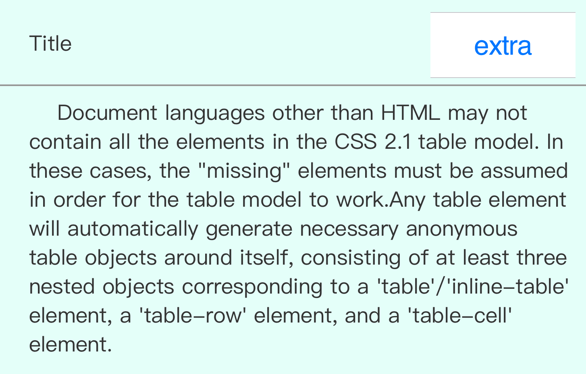

第3节：其他
搞清楚了 盒子与之间的关系， 很多问题都可以解决了，比如说 Card 的Title 如何放置，Content 如何放置，等等。但是还有额外的细节需要我们解决：

Title后面额外的显示以及操作， 是使用 float 布局还是使用 absolute？我认为分两种情况：
如果 Extra 的位置在 header 部分上垂直居中，我推荐使用 float:right 使 Extra 右移
但是如果 Extra 的位置不是垂直居中的，而是偏上或者偏下，那么我认为使用 absolute 更好一些，这种情景下使用 float 计算位置更为繁琐。
复用
这里其实是聊一些额外的东西，复用其实是一个与 html 语意化相关的问题，当多个 Card 结构与布局相似时，写太多同样的代码不但会影响 CSS 文件的整洁，还会影响代码的易读性和可维护性（其实主要是影响心情）
我们需要借助一点小手段来保持代码整洁（心情愉快）：
我在最开始页面重构的时候会犯一个错误：一点一点写细节代码，正确的做法应该是先分析网页整体的结构，再进行细节的推敲。要做到「一览众山小」。
这样才能对整体的结构有更深刻的认识，更容易的抽离出公共样式